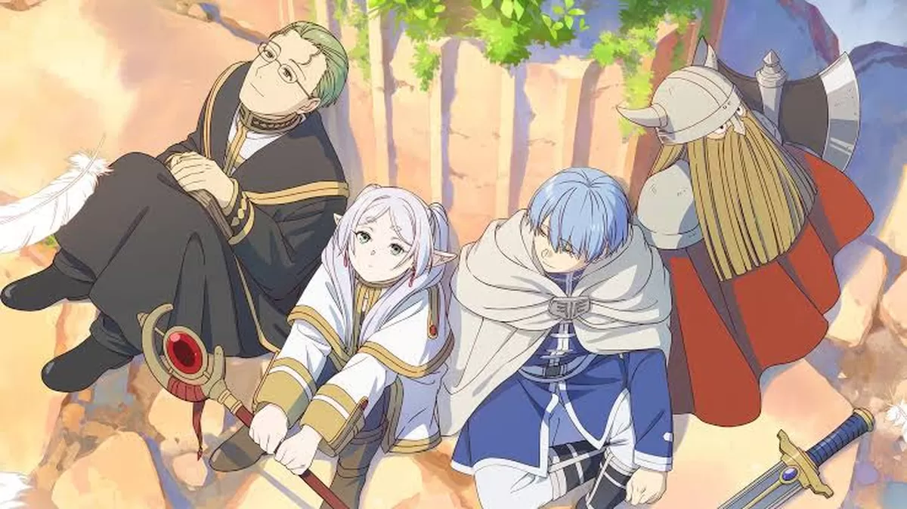
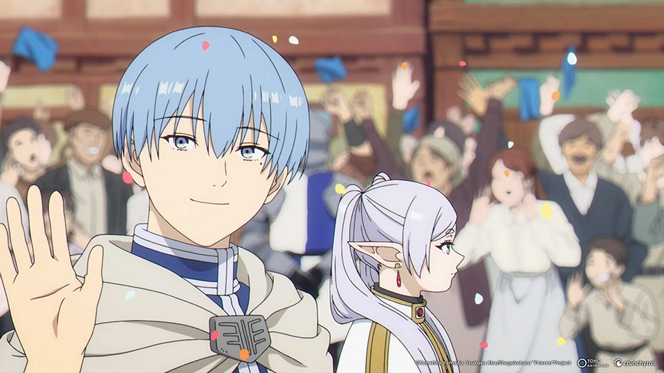
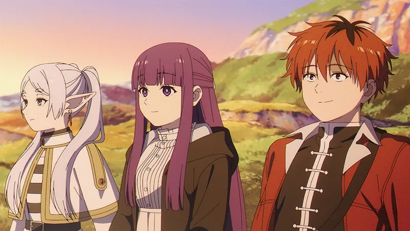

Derrota do rei demônio

Após uma longa jornada, Frieren e seus companheiros conseguem derrotar o Rei Demônio e trazer paz ao mundo. Mesmo sendo um momento histórico, Frieren não demonstra tanta emoção, pois para ela, o tempo passa de forma diferente. Enquanto seus amigos celebram o fim da guerra, ela encara aquilo como apenas mais um capítulo de sua longa vida..
Viagem após 50 anos
Cinquenta anos se passam rapidamente para Frieren, mas para os humanos, esse tempo representa toda uma vida. Ao reencontrar seus antigos companheiros, ela percebe como o tempo afetou cada um deles. Esse momento marca o início de sua reflexão sobre o valor das conexões humanas.

Nova jornada

Após a perda de um de seus companheiros, Frieren decide embarcar em uma nova jornada. Dessa vez, seu objetivo não é apenas viajar, mas entender melhor os sentimentos humanos e dar mais valor às memórias que criou ao longo do caminho.
Novos companheiros
Durante sua nova jornada, Frieren encontra novos aliados que passam a acompanhá-la. Com eles, ela começa a criar novos laços e lentamente aprende a importância da amizade e do tempo compartilhado.
